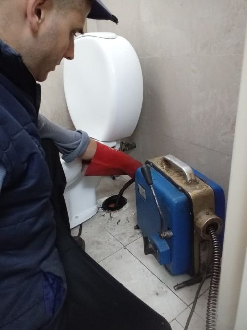

Destapaciones de baños e inodoros
Solucionamos obstrucciones críticas en baños e inodoros de forma limpia y rápida. Destapamos rejillas y desagües con máquinas específicas para remover cabellos, jabón y sarro acumulado.
Pedir presupuesto